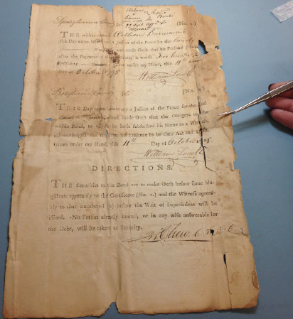

Featured
Fredericksburg Circuit Court Archives
We have volunteered at our local Courthouse archives, assisting in processing, stabilizing and rehousing documents over 200 years old.
November 12, 2017
View Project

We have volunteered at our local Courthouse archives, assisting in processing, stabilizing and rehousing documents over 200 years old.
"The historical and cultural foundations of the Nation should be preserved as a living part of our community life and development in order to give a sense of orientation to the American people."
- Preamble to the National Historic Preservation Act of 1966Follow the link below to reach our about your archival needs. After filling out the form, we will have a better understanding of how best to serve you.
Go To form